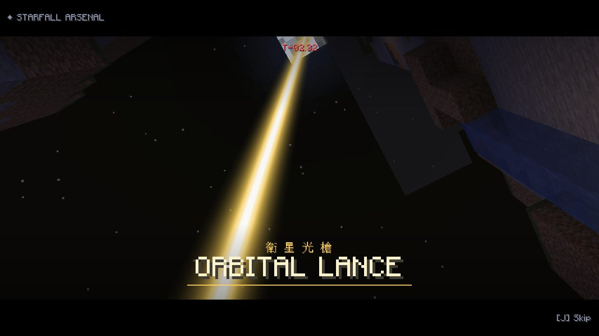
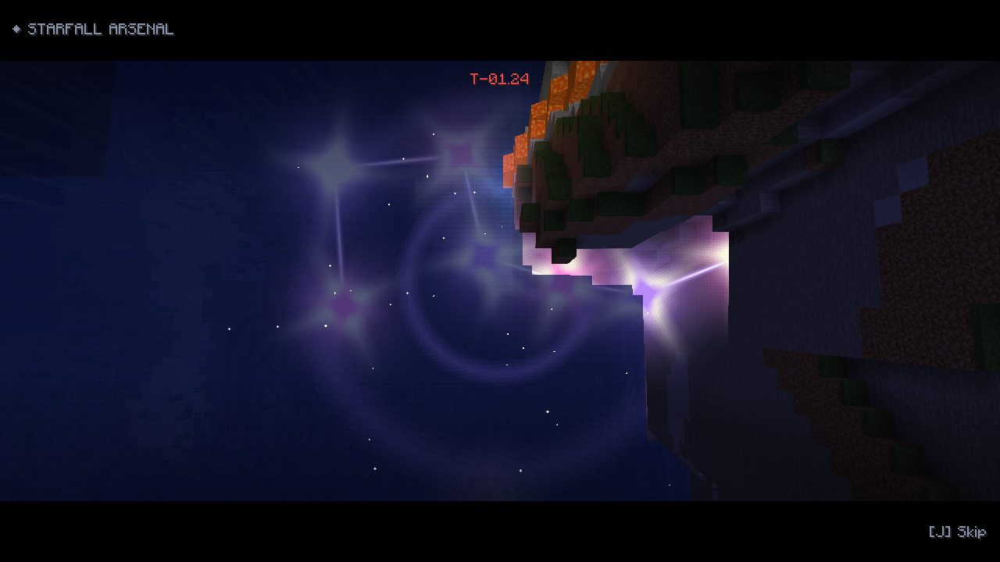
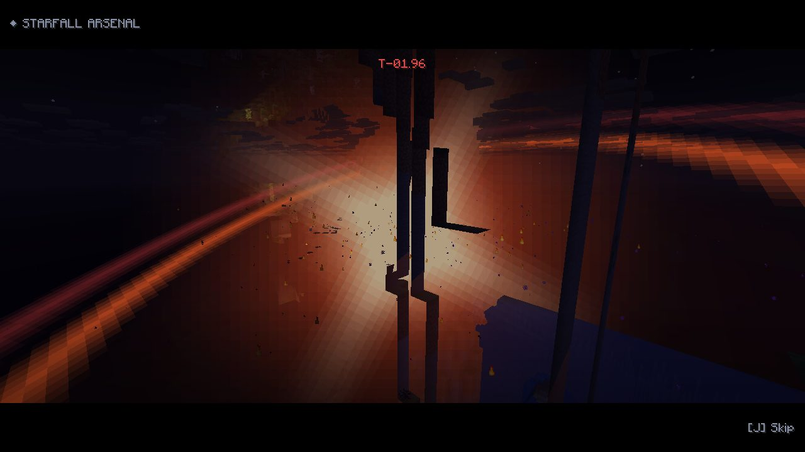

The Armory
These are the real 3D models from the mod, loaded from its item model files. Drag to rotate.
drag to spin · pinch / scroll to zoom
Cutscene preview
A browser re-creation of the in-game film, using the same camera script and star paths as the mod. In Minecraft, press J to skip a film, or to switch films off.
Sound on for the full effect.
In-game captures
Real Minecraft 1.21.11 screenshots: the Orbital Lance firing from orbit, the Seven Stars forming the Big Dipper, and the Supernova's black hole swallowing the ground.



Install
- Install Fabric Loader for Minecraft 1.21.11.
- Put Fabric API in your
modsfolder. - Put
starfall-arsenal-1.1.0.jarin the same folder. - Launch the fabric-loader-1.21.11 profile. The weapons are in the Starfall Arsenal creative tab.
Warning: these weapons really wreck terrain. Try it in a test world first, or run /gamerule starfall:terrain_damage false to keep the blast and leave the terrain alone.
Controls & crafting
- Right-click with a weapon to use its skill where you're looking. The Starfall Blade charges straight ahead instead.
- J skips a cutscene, and when no film is playing it turns films on or off. You can rebind it.
- Stellar Remote: amethyst shard, 4 iron ingots, a redstone block and a gold ingot.
- Every impact drops Star Fragments. Craft them into the other weapons: Blade (2 fragments, 2 amethyst, diamond sword), Scepter (7 fragments, 2 blaze rods), Core (8 fragments, nether star).